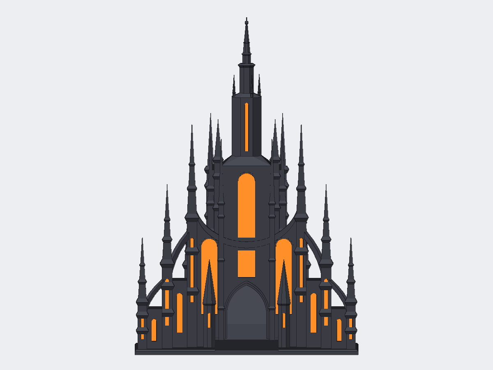

Game aids / Mistborn fan model
Kredik Shaw dice tower
An unofficial Mistborn fan model of the Lord Ruler’s palace, built as a dice tower: dice drop through the back roof, tumble over two baffles, and roll out the front gate into a courtyard tray.
- Assembled height
- 270 mm
- Tower footprint
- 180 × 148 mm
- Print pieces
- Tower, spire, tray, windows
- Supports
- None


Front · Model render. Select the image to enlarge.


The Lord Ruler’s palace, as a dice tower
The shape follows the published Mistborn artwork of Kredik Shaw: a tall central tower with a long glowing window, a bowl-shaped curve across the facade, and slender needle towers that step down and forward on each side, joined by steep flying buttresses. Dice go in through the open roof of the hall at the back, bounce off two baffles, and run through a tunnel under the central tower and out of the gate.
Four parts, no supports
The tower body prints upright at 187 mm, so it fits a Prusa MK3/MK3S; the top of the central tower is a separate 113 mm piece that glues onto a square peg, for 270 mm assembled. The tray docks against the front of the base. At 0.20 mm and 15% infill in PLA, everything takes about 34 hours and 446 g, most of it the tower (27 hours, 349 g). Leave supports off: the baffles inside the shaft print as bridges between its walls.
Glue-in glowing windows
Every window is a 1.2 mm pocket. Print the 27 window tiles flat in translucent orange or red and glue them in, which keeps colour changes out of the main print. The shaft is 50 × 60 mm inside with 26 mm gaps at the baffle tips, so standard polyhedral dice, including a 20–22 mm d20, pass through.
Fan work
This is an unofficial fan model. Mistborn, Kredik Shaw and Luthadel belong to Brandon Sanderson and Dragonsteel Entertainment, who have not sponsored, authorized or endorsed it.
Design: Beau Gosse · AI-assisted creation.
CC BY-NC-SA 4.0 · Noncommercial use, attribution, and share-alike.